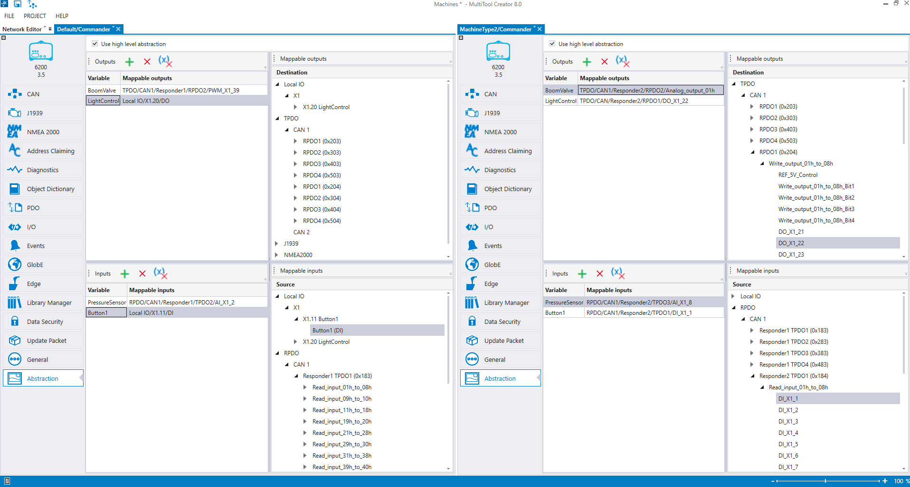

Machine type/unit name is shown in the device properties window. This makes it easier to open multiple configurable units simultaneously, so that they can be compared easily. If there is only one machine type, only the unit's name is shown.
